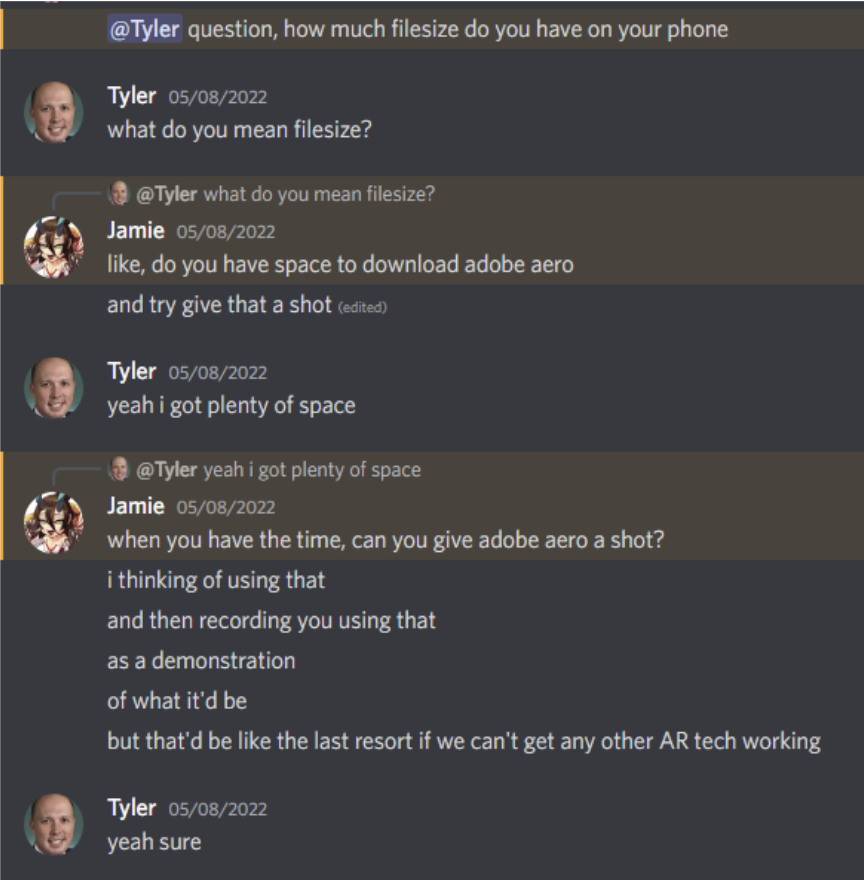
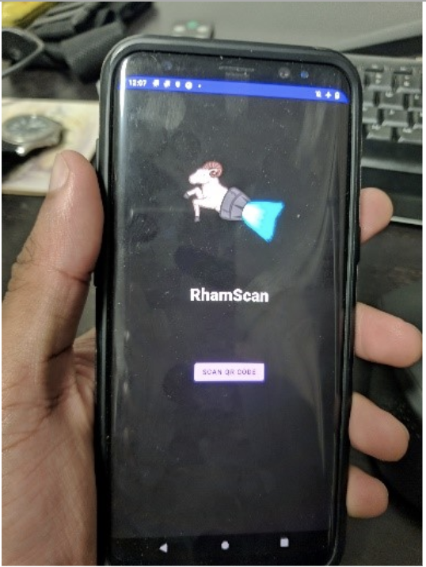
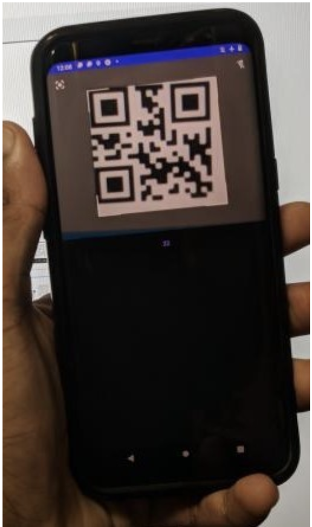
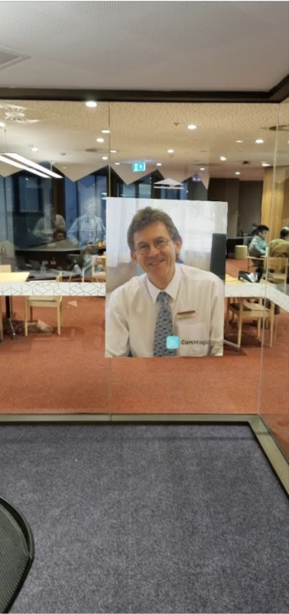
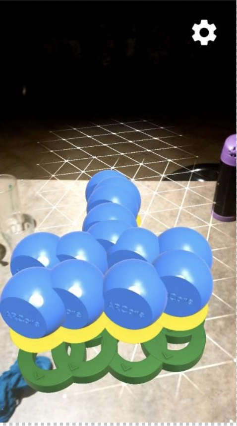
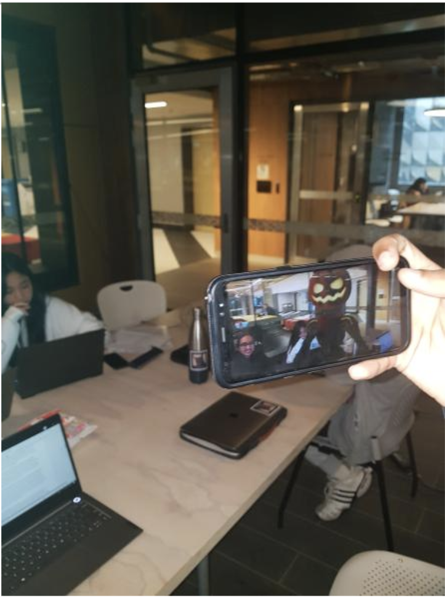

PLANS AND PROGRESS
WEEK 1 (2nd MAY - 8th MAY)
No actual progress was planned for week 1 due to the other more pressing assignments that were due at this week, although we did lay out the initial details of the project such as determining the utilisation of a mobile phone being the environment we wanted to develop in, the decision to develop on the Android platform rather than an iOS platform, and a rough idea for our 2 initial developers would each be doing. It was decided that Abel would be developing the QR code framework for the application whilst Jamie fully focuses on the AR aspect of the mobile application. Despite having no expectations for beginning this week, Abel and Jamie began their adventure into learning the Java language and began familiarising themselves with the basics of Java with the aid of YouTube tutorials.

Abel began learning how to use android studio in order to begin development of the RHAMSCAN application, over this week he went from being able to add 2 numbers at the end of the first day along with learning the basic syntax of Java, to being able switch between different “pages” and call activities upon the click of the button. But despite this great progress, there were also a fair share of obstacles in the way. For instance, Abel had considerable issues with the emulator he wanted to utilise, notably the emulator wouldn’t open and when it did, it would constantly have error. It is unknown whether the issue was with how Abel had structured the code or if it was due to the program itself throwing errors. Also, once the emulator was closed it would refuse to reopen unless it was uninstalled and reinstalled, which severely slowed down progress due to how amateur the emulator was with its constant errors and crashes
Jamie’s beginning into Java was a lot less graceful than Abel’s as he was tasked with getting the AR half of the project going which, unlike app development, lacked any standardised, well-known software. With this limitation in mind, Jamie had to do some research into AR development. From his research he came up with a list of possible software to use, Adobe Aero, Brio, Holokit, Vuforia Engine and ARcore. All of the software listed came with their own advantages but also a whole slew of disadvantages that would discourage using them. For instance, Adobe Aero promised no necessary coding and easy installation of mobile phones, making it a promising prospect for its easy to start process. But, as Jamie would find out 3 days later, it was only available on IOS devices, which only one of us had. Because of this, we decided to cut our loses and remove a potential bottleneck in development by not being only reliant on Roma’s phone and chose another software to use for our development. Luckily for Jamie he has scoped out other possible AR software’s such as ARcore which looks really promising for what we needed as it was a package found in Android Studio that Abel had already been using and was relatively well documented for a recently new package. Overall despite his drawback with Adobe Aero Jamie made great progress this week.
WEEK 2(9th MAY - 15th MAY)
PLAN

This was the week where we planned to begin development of the deliverables to Jamie’s and Abel’s initiative last week they can hopefully get straight into the actual development of the end deliverables rather than spend this week learning the basics of Android Studio and programming language. The decided upon plan for the end of this week is to simply have some tangible software by the end of the week, whether it just be a very basic framework for an application or a whole finished product. The plan was intentionally chosen to be very basic and low clearance goals as simply being able to demonstrate the technical functions of the application was enough. In spite of low expectations, both Abel and Jamie had managed to accomplish a lot in their respective fields. Abel managed to clear several test conditions in a single day, while Jamie not having made progress in AR made strides in understanding how Android Studio worked. Additionally, our report writers have a soft deadline to have their assigned sections completed by this Thursday so that they can begin aiding our development team in order to bolster our development efforts so hopefully we can all meet those goals.
PROGRESS

For our application design, Abel has made great strides in the development of the RHAMSCAN mobile application. He developed the UX of application using XML, a markup language which draws up the visual elements of the app. On top of the basic UX being completed, which can be seen on the left, for the app Abel was also able to get a QR code reader functional and online via Java. The Java was extremely simplistic and would not likely be usable for the finished product due to only being able to display text on the screen, but nonetheless shows great promise for the coming weeks, with the possibility for a QR code scanner that can use a value to put an AR model on the screen being a real possibility by the deadline of the assignment now. Abel has also found a way around the emulator issues last week. It was discovered that Android Studio allows for live demos to be performed on personal devices by connecting them to the computer and downloading the software directly, with this we no longer need to rely on any 3rd party software, essentially cutting out the middleman. But when one problem is squashed new ones arise. The video which Abel followed discussed how to program the application however it failed to mention how to define the 'id' declared in the XML and other variables which are used in the app. Since he was relatively new to mobile application development, he struggled to find a work around. Eventually he was able to find the solution and could run the app as intended.


On the AR front, Jamie’s week has also been fruitful progress wise. On Monday we were introduced to another AR software by the team making the AR map for RMIT, ARway. Jamie chose to focus on learning how to use ARcore but to leave ARway as another possible option in case things didn’t go to plan with ARcore. We chose ARway as our backup as it had been proven as useful thanks to the recommendation from the other team as according to them, it had been relatively easy to set up and was straightforward to use. However, it wasn’t explicitly sure if ARWay was fit for our needs, as from first glance it didn’t demonstrate the model display that we had wanted. Jamie also started using Android Studio in order to get the AR scanner working on his phone. Unfortunately, Jamie failed to pick up Java as fast as Abel so app development for the AR half of our assignment had yet to start, but this was considered fine as development could pick up quickly with assistance from Abel. On the AR side of thing. On the AR side of things Jamie was able to utilise ie was able to utilise ARCore in order to render models in the real world with the help of a GitHub repository and utilising a sample app. However, he has yet to figure out how to . We also found a website called Cartmagician which is typically used by companies such as IKEA to display furniture in your house before purchasing but, with some abuse of texture imports and very incorrect application of the intended usecase, can also be used to generate and display adisplay them in the real world along with generating a QR code to go along with it as demonstrated with the image on the right. Although we don’t know how useful this website will be in for our purposes, as when you scan the QR code it automatically redirects you to Google AR on your phone but it shows promise at the current moment as a last resort. Additionally, our backup app ARWay is used solely for the purpose of generating maps in AR, meaning it is completely useless for our uses. The team who recommended had completely neglected to tell us what it was intended for, which we consider unfortunate but not a big issue
WEEK 3(16th MAY- 22nd MAY)
PLAN
Our plan for this week was to begin wrapping up the project so it is all ready for submission week (next week) as we didn’t want to be rushing to complete things for submission. We plan on incorporating a Database into Abel’s application so when a QR code is scanned it will call upon a result from the database which in theory, when combined with Jamie’s AR viewer will allow certain art pieces to be called upon, but that is unlikely to be completed within the time, so we are just settling for data to be pulled from the database when a QR code is scanned. For Jamie’s AR viewer we plan to add custom models to be viewable by the end of the week. Also, development of a Figma deliverable has begun thanks to Elliot joining the development team which is also planned to be finished by this week.
PROGRESS
This week Abel began researching the SQL aspect of RhamScan where it can dynamically fetch information from a database and display on screen. He first watched a YouTube video where it explains that it is possible to create a new database within the application and to perform CRUD tasks through SQL statements. The demo application was a good starting point for him as it explains the basics of how to integrate an SQL database to an Android app. However, since this database was created within the program, each time the program was re-installed into the app, all data stored in the database would be overwritten with a fresh table. To overcome this Abel had to figure out a way where he can use an external database. The external database was also important for RhamScan as we want the users to interact with a read only database. From this point forward Abel researched how to import an external database into the RhamScan app.
The development of the AR deliverable began actual coding in week 3, as the first two weeks were spent scoping out potential software to utilise for the coding process, such as ARway, ARToolKit+, Mixare and Adobe Aero to name a few. Jamie had ultimately decided to use the ARCore Software Development Kit created by Google for Android Studio, as Abel had already begun work on developing the QR code software in the same software and thus could help when needed. Additionally, it had only required a download of a plugin for Android, Sceneform, for the AR technology to run on mobile devices. This was advantageous for our needs, as the other options required a credit card sign up which was too costly or required proprietary software we could not afford.
When Jamie first started out, the learning process was harder than expected, as it had utilised Java as its code base and thus was a completely brand-new language for to learn. There was a consideration to instead utilise a language he was familiar with like Python but was quickly shut down as the AR libraries and the work necessary to set the mobile application aspect of the deliverable up. Thus, it was decided to persevere and use the Hello World tutorial to become familiar with the layout of the Android Studio development application. While it was hard to study the Java language and there were lots of gaps in the understanding of the code, the understanding of the layout of the program helped build the foundation to follow the tutorials that were provided by the ARCore website.
The sample app provided by the ARCore, titled “Hello_Ar” tested well for the purposes of seeing whether the AR technology could work on a Samsung Galaxy S7 (the phone Jamie owned) and resulted in a resounding success. This was then followed by an attempt to create his own AR application foundation following tutorials online and learn to understand how the AR technology worked. However, the tutorials would constantly be throwing eras despite following all the tutorials to the word, so it was then decided to avoid putting in extra work for a flawed attempt and to instead use “Hello_AR” as a starting point and modify it to work for the deliverable’s needs. However, to import Jamie’s own assets to use as the model generation, it had required the download of .obj files and have it converted into .sjb file to work within the sample app used. It was then Jamie discovered that Google had discontinued support for the Sceneform plugin circa 2020 and was the source of issues earlier after two hours of googling. To bypass this issue, Jamie found a maintained version of SceneForm on GitHub and downloaded the sample app listed on that GitHub instead, scrapping the previous hours of work to start fresh on a better version.
Elliot Began and practically finished the entire Figma framework for RHAMSCAN within this week without a hitch. He began by making a simple pen and paper mock-up to establish the desired layout for the application, this is how he came up with the initial UI design features of our application such as the navigation bar at the bottom and the configuration of all the buttons from page to page. After the initial paper wireframe was perfected, he moved onto creating a low fidelity model of RHAMSCAN on Figma, focusing on the basic framework such as incorporating all the necessary features on each page, e.g. putting all possibility’s after scanning artwork (save to gallery, generate QR code, register). Once this was done for all pages, Elliot fleshed out the design, adding colours and custom icons, transitioning the prototype into a high fidelity one, adding button interactions as well. Ready for presentation.

WEEK 4 (23rd MAY - 29th MAY)
PLAN
Add any remaining finishing touches onto Abel’s and Elliot’s artifacts such as creating image compatibility to Abel’s database system so it can pull and image from the database when a QR code is scanned. As for Elliot’s we just need to have that on standby in case the need arises to make any changes although this is unlikely. Due to unforeseen circumstances (see end of may 23rd meeting) Jamie has somehow managed to lose all of his artifact work done up to thus far, although this is a major issue it may not be as bad as it initially seems, Jamie still possesses the most recent version of his AR viewer on his phone but it is currently unknown if it is possible to extract the program back onto his computer, therefore Jamies plan for this week is to get the program back, whether that means re-writing the entire thing or figuring out how to get it off his phone.
PROGRESS
In this final week Abel’s main focus is to get the RhamScan app to read the database and display two sets of text in their own TextViews and display an image stored in the database as an ImageView. But before he does that he needs to find a way to get an external database to work. After following many YouTube videos, he was finally able to connect the RhamScan app to the external database. From there he could insert SQL queries which could retrieve data from the specified column. However, this led him to a problem as the method he wrote could only output a single string. The solution to this issue was to use a Java class called Map; this class can store data as key value pairs. The key would be the column name of the database and the value would be the cell which overlaps the column and the row of the called primary key. Using this class he was able to display the name and description of the art in their own TextViews.
In order to get the image working I tried to create a new column in the art database called ‘artImage.’ From there I took a sample image and encoded it into base64 so that I could store it in the database as text. The goal was to read the encoded text and make Java to decode it back to an image where it can be viewed as an ImageView. However while trying to get an image to display, the app would either crash or would not read anything from the database, it was unclear why. Going through the error log I found that the app was not able to find the column called ‘artImage.’ I tried to see if the app can read different values by updating existing values however the app would just output the old values. It was clear that any modifications to the original database would not be reflected in the app. Until I get the database to read updated values, the image will not display.
Having finished the deliverable in Week 3, the attempts at backing up the code into the Team GitHub repository had been disastrous. My first attempt at compiling and pushing the code had unfortunately broken my Github Desktop application and prevented any further attempts at pushing. From our understanding, the file names inside the code we had copied were far too long for the code to be able to be pushed. Additionally, some file sizes were far too much for GitHub to push safely without external code. When the problematic files had been removed, GitHub had refused to update those changes and kept insisting on pushing out the problematic files. An attempt was made to uncommit then recommit, but for whatever reason, the application refused and after several hours of trying, an agreement was reached to abandon that avenue and try to push the commit without the problematic files into a different desktop application.
The code files were cut and pasted into a backup USB and transported to a laptop computer to circumvent the issues with the first attempt and attempted again. However, there were issues with trying to paste it into the laptop computer, as the file directory names were far too long and once again becoming major issues. It became apparent that fixing those directory names to be shorter did not solve the issue, as the file explorer for whatever reason decided the best approach to this was deleting files, rendering the code files effectively inoperable. To summarise, to back up the deliverable onto GitHub, the project had essentially deleted itself.
Adapting to the situation, as I had already understood what made the code work, I downloaded a fresh save of the GitHub that was used for the first run and attempted to recreate what I had already done. However, because I didn’t write down what I did the first time around to fix the initial problems, such as the gradle wrapper not existing in the base file, I had only created an approximate recreation of it. There is a plan to see whether the app works on a different phone, but as of writing the only thing left of the original deliverable is on my Samsung S7, which I hesitate to connect in case the program is overwritten and lost forever.

The attempt to recreate the application was done on Thursday in a group meeting with everyone in it. The focus of the test was to try and reinstall the application on a new phone without and to get it functioning, hence why the cat model is absent from the image on the left. Initially, Android Studio was creating frustration as a never-ending list of errors kept flowing, such as missing wrappers and missing SDKs. After some troubleshooting and trial and error, the gradle wrapper was fixed by implementing some basic coding and SDK file was fixed by moving the local SDK file to a different location due to my laptop’s username containing whitespace, thus causing issues with path finding for Android Studio. Additional issues arose such as incompatibility with certain people’s phones, such as Rhoma’s iOS Apple phone and Elliot having a phone that could not update Google AR for Android. Ultimately, using Abel’s test phone, we were able to recreate the application and successfully download it to his phone and was able to save it to GitHub for recreation and download.